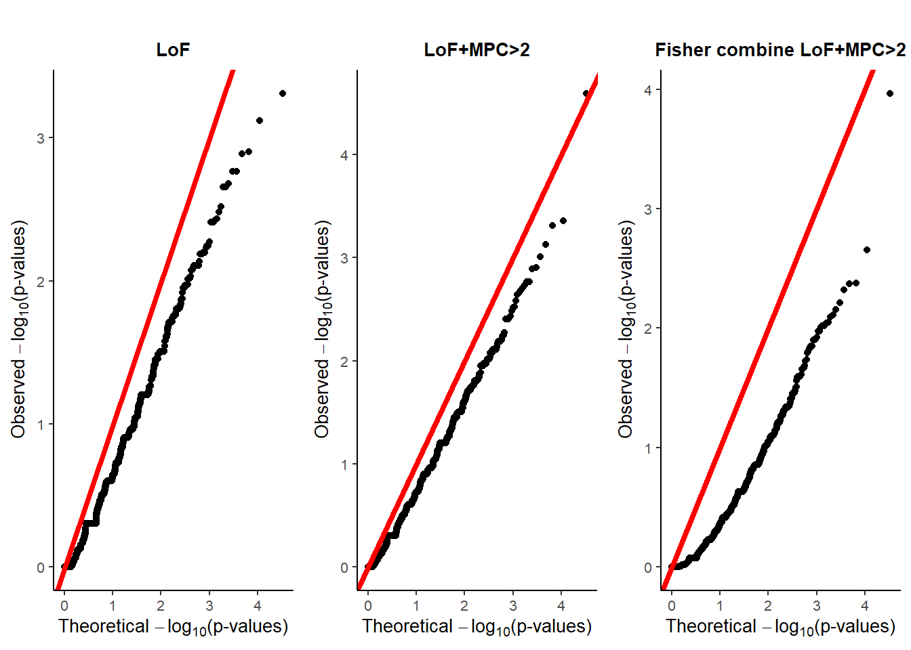

QQ plot of burden and ACAT
2023-11-07
################## DO NOT RUN ########################
path="C:\\Shengtong\\research\\rare-var\\"
########### read into Laura's data all inherited variants aggregated
mirage_input=as_tibble(read.table(paste(path, "ASC\\Laura_result\\mirage_input_20231013.txt", sep=""), header=T))
N_all=14578 # from Laura's script: NOTES_wrap_mirage_100323
#res=mirage(data.frame(mirage_input),n1=N_all,n2=N_all,gamma=c(6,6,6,3,3,3),delta.init = 0.05,estimate.delta = FALSE)
#mirage_input_for_gnomAD_AF=mirage_input %>% select(Variant, Gene)
#write.csv(mirage_input_for_gnomAD_AF, file=paste(path, "ASC\\Laura_result\\mirage_input_for_gnomAD_AF_20231106.csv", sep=""))
########## read into gnomAD allele frequency
ASC_v17_TDT_by_variant_20200916_gnomad=as_tibble(read.table(paste(path, "ASC\\Laura_result\\ASC_v17_TDT_by_variant_2020-09-16_gnomad.txt", sep=""), header=T))
mirage_input_with_gnomad_AF=right_join(ASC_v17_TDT_by_variant_20200916_gnomad, mirage_input, by="Variant")variant_counts <- mirage_input %>%
group_by(Gene) %>%
summarise(variant_count = n()) %>%
arrange(desc(variant_count))
summary(variant_counts$variant_count)## Min. 1st Qu. Median Mean 3rd Qu. Max.
## 1.0 38.0 70.0 93.8 118.0 6425.0QQ plot of STAAR
################# calculate ACAT pvalue for every gene
#BF_proband_AllGene=as_tibble(read.csv("../output/kyleData/BF.proband.AllGene_1105_2022.csv"))
#BF_proband_AllGene_sorted=BF_proband_AllGene%>%arrange(desc(post.prob))
colnames(mirage_input_with_gnomad_AF)[4:6]=c("Transmitted_proband", "Untransmitted_proband", "Group_Index")
interest_gene=unique(mirage_input_with_gnomad_AF$Gene) # use all genes
new_data=mirage_input_with_gnomad_AF %>% filter(Gene %in% interest_gene) %>% select(Variant, Gene, Gnomad_non_neuro_AF, Transmitted_proband, Untransmitted_proband, Group_Index) %>% drop_na() ##### remove variants with NA AF
acat_gene_pvalue=numeric()
a1=1; a2=25
for (i in 1:length(interest_gene))
{
#i=6819
cat(i, "th gene is running", "\n")
single_gene_data=new_data %>% filter(Gene==interest_gene[i])
var_group_index=single_gene_data %>% select(Group_Index) %>%pull
num_var_group=unique(var_group_index)
acat_var_pvalue=numeric()
acat_var_weight=numeric() # give weights when use ACAT to collapse all variants
#####################
if (length(num_var_group)==1) # only one variant group
{
if (nrow(single_gene_data)==1) # case 1: only one variant in one group
{
binom_test=binom.test(c(single_gene_data$Transmitted_proband, single_gene_data$Untransmitted_proband), p=0.5, alternative = "greater") # calculate p value under alternative: T>UT
acat_var_pvalue[1]=binom_test$p.value
maf=single_gene_data$Gnomad_non_neuro_AF
acat_var_weight[1]=max(dbeta(maf, a1, a2)*(maf*(1-maf))^0.5, 1e-300) ##### use weight, beta density as in ACAT paper https://www.ncbi.nlm.nih.gov/pmc/articles/PMC6407498/pdf/main.pdf
} # end of if (nrow(single_gene_data)==1) # only one variant in one group
if (nrow(single_gene_data)>1) # case 2: multiple variants in one group
{
minor_alele_count=numeric()
for (j in 1:nrow(single_gene_data)) # count the total number of alleles for every variant
minor_alele_count[j]=single_gene_data$Transmitted_proband[j]+single_gene_data$Untransmitted_proband[j]
minor_alele_count_lessthan10=which(minor_alele_count<10) # find variants with MAC<10
#############
if (length(minor_alele_count_lessthan10)<=1) # if only one or no variant with MAC<10, no need collapsing
for (j in 1:nrow(single_gene_data))
{
binom_test=binom.test(c(single_gene_data$Transmitted_proband[j], single_gene_data$Untransmitted_proband[j]), p=0.5, alternative = "greater") # calculate p value under alternative: T>UT
acat_var_pvalue[j]=binom_test$p.value
maf=single_gene_data$Gnomad_non_neuro_AF[j]
acat_var_weight[j]=max(dbeta(maf, a1, a2)*(maf*(1-maf))^0.5, 1e-300)
}
#############
if (length(minor_alele_count_lessthan10)>1 & length(minor_alele_count_lessthan10)<nrow(single_gene_data)) # some, not all variants have MAC<10
{
binom_test=binom.test(c(sum(single_gene_data$Transmitted_proband[minor_alele_count_lessthan10]), sum(single_gene_data$Untransmitted_proband[minor_alele_count_lessthan10])), p=0.5, alternative = "greater") # calculate p value under alternative: T>UT ## collapse all variants with MAC<10
acat_var_pvalue[1]=binom_test$p.value
maf=single_gene_data$Gnomad_non_neuro_AF[minor_alele_count_lessthan10]
acat_var_weight[1]=max(dbeta(maf, a1, a2)*(maf*(1-maf))^0.5, 1e-300)
minor_alele_count_morethan10=which(minor_alele_count>=10) # find variants with MAC>=10
if (length(minor_alele_count_morethan10)==1)
{
binom_test=binom.test(c(single_gene_data$Transmitted_proband[minor_alele_count_morethan10], single_gene_data$Untransmitted_proband[minor_alele_count_morethan10]), p=0.5, alternative = "greater") # calculate p value under alternative: T>UT
acat_var_pvalue[2]=binom_test$p.value
maf=single_gene_data$Gnomad_non_neuro_AF[minor_alele_count_morethan10]
acat_var_weight[2]=max(dbeta(maf, a1, a2)*(maf*(1-maf))^0.5, 1e-300)
}
if (length(minor_alele_count_morethan10)>1)
for (j in 1:length(minor_alele_count_morethan10))
{
binom_test=binom.test(c(single_gene_data$Transmitted_proband[minor_alele_count_morethan10[j]], single_gene_data$Untransmitted_proband[minor_alele_count_morethan10[j]]), p=0.5, alternative = "greater") # calculate p value under alternative: T>UT
acat_var_pvalue[1+j]=binom_test$p.value
maf=single_gene_data$Gnomad_non_neuro_AF[minor_alele_count_morethan10[j]]
acat_var_weight[1+j]=max(dbeta(maf, a1, a2)*(maf*(1-maf))^0.5, 1e-300)
}
} # end of if (length(minor_alele_count_lessthan10)>1 & length(minor_alele_count_lessthan10)<nrow(single_gene_data)) # some, not all variants have MAC<10
#############
if (length(minor_alele_count_lessthan10)>1 & length(minor_alele_count_lessthan10)==nrow(single_gene_data)) # all variants have MAC<10
{
binom_test=binom.test(c(sum(single_gene_data$Transmitted_proband[minor_alele_count_lessthan10]), sum(single_gene_data$Untransmitted_proband[minor_alele_count_lessthan10])), p=0.5, alternative = "greater") # calculate p value under alternative: T>UT ## collapse all variants with MAC<10
acat_var_pvalue[1]=binom_test$p.value
maf=mean(single_gene_data$Gnomad_non_neuro_AF[minor_alele_count_lessthan10]) # use average MAF https://www.ncbi.nlm.nih.gov/pmc/articles/PMC6407498/pdf/main.pdf
acat_var_weight[1]=max(dbeta(maf, a1, a2)*(maf*(1-maf))^0.5, 1e-300) # avoid weight to be 0
}
} # end of if (nrow(single_gene_data)>1) # case 2: multiple variants in one group
#####################
if (max(acat_var_pvalue)==1 & length(acat_var_pvalue)>1)
acat_var_pvalue[acat_var_pvalue==1]=1-1/(length(acat_var_pvalue)) # adjust pvalues https://github.com/yaowuliu/ACAT
if (max(acat_var_pvalue)==1 & length(acat_var_pvalue)==1)
acat_var_pvalue[acat_var_pvalue==1]=1-1e-300
acat_gene_pvalue[i]=ACAT(acat_var_pvalue, acat_var_weight)
} # end of if (length(num_var_group)==1) # only one variant group
############
if (length(num_var_group)>1) # multiple variant groups
{
acat_group_pvalue=numeric()
for (g in 1: length(num_var_group)) # use ACAT within every variant group
{
#g=1
single_gene_single_group_data=single_gene_data %>% filter(Group_Index==var_group_index[g])
acat_var_pvalue=numeric() # within each variant group, use ACAT
acat_var_weight=numeric()
if (nrow(single_gene_single_group_data)==1) # case 1: only one variant in one group
{
binom_test=binom.test(c(single_gene_single_group_data$Transmitted_proband, single_gene_single_group_data$Untransmitted_proband), p=0.5, alternative = "greater") # calculate p value under alternative: T>UT
acat_var_pvalue[1]=binom_test$p.value
maf=single_gene_single_group_data$Gnomad_non_neuro_AF
acat_var_weight[1]=max(dbeta(maf, a1, a2)*(maf*(1-maf))^0.5, 1e-300) ##### use weight as in ACAT paper, avoid zero weights https://www.ncbi.nlm.nih.gov/pmc/articles/PMC6407498/pdf/main.pdf
} # end of if (nrow(single_gene_data)==1) # only one variant in one group
if (nrow(single_gene_single_group_data)>1) # case 2: multiple variants in one group
{
minor_alele_count=numeric()
for (j in 1:nrow(single_gene_single_group_data)) # count the total number of alleles for every variant
minor_alele_count[j]=single_gene_single_group_data$Transmitted_proband[j]+single_gene_single_group_data$Untransmitted_proband[j]
minor_alele_count_lessthan10=which(minor_alele_count<10) # find variants with MAC<10
#############
if (length(minor_alele_count_lessthan10)<=1) # if only one or no variant with MAC<10, no need collapsing
for (j in 1:nrow(single_gene_single_group_data))
{
binom_test=binom.test(c(single_gene_single_group_data$Transmitted_proband[j], single_gene_single_group_data$Untransmitted_proband[j]), p=0.5, alternative = "greater") # calculate p value under alternative: T>UT
acat_var_pvalue[j]=binom_test$p.value
maf=single_gene_single_group_data$Gnomad_non_neuro_AF[j]
acat_var_weight[j]=max(dbeta(maf, a1, a2)*(maf*(1-maf))^0.5, 1e-300)
}
#############
if (length(minor_alele_count_lessthan10)>1 & length(minor_alele_count_lessthan10)<nrow(single_gene_single_group_data)) # some, not all variants have MAC<10
{
binom_test=binom.test(c(sum(single_gene_single_group_data$Transmitted_proband[minor_alele_count_lessthan10]), sum(single_gene_single_group_data$Untransmitted_proband[minor_alele_count_lessthan10])), p=0.5, alternative = "greater") # calculate p value under alternative: T>UT ## collapse all variants with MAC<10
acat_var_pvalue[1]=binom_test$p.value
maf=mean(single_gene_single_group_data$Gnomad_non_neuro_AF[minor_alele_count_lessthan10])
acat_var_weight[1]=max(dbeta(maf, a1, a2)*(maf*(1-maf))^0.5, 1e-300)
minor_alele_count_morethan10=which(minor_alele_count>=10) # find variants with MAC>=10
if (length(minor_alele_count_morethan10)==1)
{
binom_test=binom.test(c(single_gene_single_group_data$Transmitted_proband[minor_alele_count_morethan10], single_gene_single_group_data$Untransmitted_proband[minor_alele_count_morethan10]), p=0.5, alternative = "greater") # calculate p value under alternative: T>UT
acat_var_pvalue[2]=binom_test$p.value
maf=single_gene_single_group_data$Gnomad_non_neuro_AF[minor_alele_count_morethan10]
acat_var_weight[2]=max(dbeta(maf, a1, a2)*(maf*(1-maf))^0.5, 1e-300)
}
if (length(minor_alele_count_morethan10)>1)
for (j in 1:length(minor_alele_count_morethan10))
{
binom_test=binom.test(c(single_gene_single_group_data$Transmitted_proband[minor_alele_count_morethan10[j]], single_gene_single_group_data$Untransmitted_proband[minor_alele_count_morethan10[j]]), p=0.5, alternative = "greater") # calculate p value under alternative: T>UT
acat_var_pvalue[1+j]=binom_test$p.value
maf=single_gene_single_group_data$Gnomad_non_neuro_AF[minor_alele_count_morethan10[j]]
acat_var_weight[1+j]=max(dbeta(maf, a1, a2)*(maf*(1-maf))^0.5,1e-300)
}
} # end of if (length(minor_alele_count_lessthan10)>1 & length(minor_alele_count_lessthan10)<nrow(single_gene_data)) # some, not all variants have MAC<10
#############
if (length(minor_alele_count_lessthan10)>1 & length(minor_alele_count_lessthan10)==nrow(single_gene_single_group_data)) # all variants have MAC<10
{
binom_test=binom.test(c(sum(single_gene_single_group_data$Transmitted_proband[minor_alele_count_lessthan10]), sum(single_gene_single_group_data$Untransmitted_proband[minor_alele_count_lessthan10])), p=0.5, alternative = "greater") # calculate p value under alternative: T>UT ## collapse all variants with MAC<10
acat_var_pvalue[1]=binom_test$p.value
maf=mean(single_gene_single_group_data$Gnomad_non_neuro_AF[minor_alele_count_lessthan10]) # use average MAF https://www.ncbi.nlm.nih.gov/pmc/articles/PMC6407498/pdf/main.pdf
acat_var_weight[1]=max(dbeta(maf, a1, a2)*(maf*(1-maf))^0.5, 1e-300) # avoid weight to be 0
}
} # end of if (nrow(single_gene_data)>1) # case 2: multiple variants in one group
#####################
if (max(acat_var_pvalue)==1 & length(acat_var_pvalue)>1)
acat_var_pvalue[acat_var_pvalue==1]=1-1/(length(acat_var_pvalue))
if (max(acat_var_pvalue)==1 & length(acat_var_pvalue)==1) # avoid enforcing singular p values to be 0
acat_var_pvalue[acat_var_pvalue==1]=1-1e-300
acat_group_pvalue[g]=ACAT(acat_var_pvalue, acat_var_weight)
} # end of for (g in length(num_var_group))
if (max(acat_group_pvalue)==1 & length(acat_group_pvalue)>1)
acat_group_pvalue[acat_group_pvalue==1]=1-1/(length(acat_group_pvalue))
if (max(acat_group_pvalue)==1 & length(acat_group_pvalue)==1)
acat_group_pvalue[acat_group_pvalue==1]=1-1e-300
acat_gene_pvalue[i]=ACAT(acat_group_pvalue) # use ACAT to combine group level p values with equal weights
} # end of if (length(num_var_group)>1) # multiple variant groups
} # end of for (i in 1:length(interest_gene))
# write.csv(data.frame(Gene=interest_gene[1:16344], ACAT_pvalue=acat_gene_pvalue), file="../output/LauraData/AllGene_6vargroups_ACAT_pvalue_2023_1108.csv")
# write.csv(combine_001, file="../output/KyleData/BF.proband.AllGene_6vargroups_burden_counts_binom_oneside_pvalues_MPC_larger_than2_AF0.01_1208_2022.csv")staar_pvalue=as_tibble(read.csv("../output/LauraData/AllGene_6vargroups_ACAT_pvalue_2023_1108.csv"))
theo <- (ppoints(length(staar_pvalue$ACAT_pvalue)))
#qqplot(-log(theo, base=10), -log(Burden.pvalue, base=10), xlab=expression(paste("Theoretical ",-log[10], "(p-values)")), ylab=expression(paste("Observed ", -log[10], "(p-values)")), main="(A) Burden", frame=F, cex.lab=0.8, pch=20)
#abline(0,1,col='red', lwd=2)
################# use ggplot draw qq plot
sx <- sort(-log(theo, base=10)); sy <- sort(-log(staar_pvalue$ACAT_pvalue, base=10))
lenx <- length(sx)
leny <- length(sy)
if (leny < lenx)sx <- approx(1L:lenx, sx, n = leny)$y
if (leny > lenx)sy <- approx(1L:leny, sy, n = lenx)$y
burden=tibble(sx=sx, sy=sy)
ggplot(burden) + geom_point(aes(x=sx, y=sy))+
theme_classic()+
xlab(expression(paste("Theoretical ",-log[10], "(p-values)")))+
ylab(expression(paste("Observed ", -log[10], "(p-values)")))+
theme(plot.title = element_text(hjust = 0.5, size=10,face="bold"))+ #center the title+
ggtitle("STAAR")+
geom_abline(intercept = 0, slope = 1, color="red",
linetype="solid", size=1.5)+
theme(text = element_text(size=10))
for STAAR analysis
apply AF filter \(AF<5\%\)
within each of 6 variant groups, use ACAT-V to combine single variant p values of binomial test using weights in the paper \(w_{i, ACAT-V}=Beta(MAF_i, a1=1, a2=25)*\sqrt{MAF_i(1-MAF_i)}\). Variants with MAC<10 are collapsed for burden test, with weight \(w_{0, ACAT-V}\).
use ACAT-O to combine 6 group level ACAT p values in the last step with equal weight as in the paper, as STAAR p value for each gene.
all variants have valid AF and those with
NAAF are removed
QQ plot of burden
################# calculate burden for each gene
colnames(mirage_input_with_gnomad_AF)[4:6]=c("Transmitted_proband", "Untransmitted_proband", "Group_Index")
interest_gene=unique(mirage_input_with_gnomad_AF$Gene) # use all genes
new_data=mirage_input_with_gnomad_AF %>% filter(Gene %in% interest_gene) %>% select(Variant, Gene, Gnomad_non_neuro_AF, Transmitted_proband, Untransmitted_proband, Group_Index)
LoF_burden_005=matrix(nrow=length(interest_gene), ncol=4)
Missense_burden_005=matrix(nrow=length(interest_gene), ncol=4)
LoF_Missense_burden_005=matrix(nrow=length(interest_gene), ncol=4)
p_value_005=matrix(nrow=length(interest_gene), ncol=5) # col1:LoF_pvalue; col2:LoF_missense_pvalue; col3: LoF_missense_fishercombined_pvalue; col4: LoF_ACAT_pvalue; col5: missense_ACAT_pvalue
LoF_burden_001=matrix(nrow=length(interest_gene), ncol=4)
Missense_burden_001=matrix(nrow=length(interest_gene), ncol=4)
LoF_Missense_burden_001=matrix(nrow=length(interest_gene), ncol=4)
p_value_001=matrix(nrow=length(interest_gene), ncol=5) # col1:LoF_pvalue; col2:LoF_missense_pvalue; col3: LoF_missense_fishercombined_pvalue; col4: LoF_ACAT_pvalue; col5: missense_ACAT_pvalue
threshold=1e-100
num.family=14578
for (i in 1:length(interest_gene))
{
#i=6819
cat(i, "th gene is running", "\n")
single_gene_data=new_data %>% filter(Gene==interest_gene[i])
############################ LoF variants
LoF_burden_005[i,1]=sum(single_gene_data %>% filter(Group_Index<4) %>% select(Transmitted_proband)%>% pull) # sum over all T LoF variants
LoF_burden_005[i,2]=sum(single_gene_data %>% filter(Group_Index<4) %>% select(Untransmitted_proband)%>% pull) # sum over all UT LoF variants
burden_test=fisher.test(matrix(c(LoF_burden_005[i,1],num.family, LoF_burden_005[i,2], num.family), nrow=2)) # two sides burden test
binom_test=binom.test(c(LoF_burden_005[i,1], LoF_burden_005[i,2]), p=0.5, alternative = "greater") # calculate p value under alternative: T>UT
LoF_burden_005[i,3]=burden_test$estimate
#LoF_burden_005[i,4]=burden_test$p.value
LoF_burden_005[i,4]=binom_test$p.value
p_value_005[i,1]=LoF_burden_005[i,4]
########## use ACAT to combine individual variant p values
single_gene_data_variant=data.frame(Trans=single_gene_data %>% filter( Group_Index<4) %>% select(Transmitted_proband)%>% pull, UTrans=single_gene_data %>% filter( Group_Index<4) %>% select(Untransmitted_proband)%>% pull) # use all LoF variants
single_gene_data_variant_pvalue=numeric()
if (nrow(single_gene_data_variant)>0)
{
for ( j in 1:nrow(single_gene_data_variant))
single_gene_data_variant_pvalue[j]=binom.test(c(single_gene_data_variant$Trans[j], single_gene_data_variant$UTrans[j]), p=0.5, alternative = "greater")$p.value# calculate p value under alternative: T>UT for each single variant
if (max(single_gene_data_variant_pvalue)==1 & length(single_gene_data_variant_pvalue)>1)
p_value_005[i,4]=1-1/length(single_gene_data_variant_pvalue) # use adjust ACAT p value
if (max(single_gene_data_variant_pvalue)==1 & length(single_gene_data_variant_pvalue)==1)
p_value_005[i,4]=1
if (max(single_gene_data_variant_pvalue)<1)
p_value_005[i,4]=ACAT(single_gene_data_variant_pvalue) # use equal weight to every single variant
}
##################################### missense (MPC>=2)variants
Missense_burden_005[i,1]=sum(single_gene_data %>% filter( Group_Index==4) %>% select(Transmitted_proband)%>% pull) # only MPC>2
Missense_burden_005[i,2]=sum(single_gene_data %>% filter( Group_Index==4) %>% select(Untransmitted_proband)%>% pull) # only MPC>2
burden_test=fisher.test(matrix(c(Missense_burden_005[i,1],num.family, Missense_burden_005[i,2], num.family), nrow=2))
binom_test=binom.test(c(Missense_burden_005[i,1], Missense_burden_005[i,2]), p=0.5, alternative = "greater") # calculate p value under alternative: T>UT; one side burden test
Missense_burden_005[i,3]=burden_test$estimate
#LoF_burden_005[i,4]=burden_test$p.value
Missense_burden_005[i,4]=binom_test$p.value
############## avoid p value of 0 or 1
if (LoF_burden_005[i,4]==0)
LoF_burden_005[i,4]=threshold
if (LoF_burden_005[i,4]>0.9999)
LoF_burden_005[i,4]=1-threshold
if (Missense_burden_005[i,4]==0)
Missense_burden_005[i,4]=threshold
if (Missense_burden_005[i,4]>0.9999)
Missense_burden_005[i,4]=1-threshold
p_value_005[i,3]=fisher(c(LoF_burden_005[i,4], Missense_burden_005[i,4]))$p
########## use ACAT to combine individual variant p values
single_gene_data_variant=data.frame(Trans=single_gene_data %>% filter( Group_Index>=4) %>% select(Transmitted_proband)%>% pull, UTrans=single_gene_data %>% filter( Group_Index>=4) %>% select(Untransmitted_proband)%>% pull) # use all missense variants
single_gene_data_variant_pvalue=numeric()
if (nrow(single_gene_data_variant)>0)
{
for ( j in 1:nrow(single_gene_data_variant))
single_gene_data_variant_pvalue[j]=binom.test(c(single_gene_data_variant$Trans[j], single_gene_data_variant$UTrans[j]), p=0.5, alternative = "greater")$p.value# calculate p value under alternative: T>UT for each single variant
if (max(single_gene_data_variant_pvalue)==1 & length(single_gene_data_variant_pvalue)>1)
p_value_005[i,5]=1-1/length(single_gene_data_variant_pvalue) # use adjusted ACAT p value
if (max(single_gene_data_variant_pvalue)==1 & length(single_gene_data_variant_pvalue)==1)
p_value_005[i,5]=1
if (max(single_gene_data_variant_pvalue)<1)
p_value_005[i,5]=ACAT(single_gene_data_variant_pvalue) # use equal weight to every single variant
}
################################## LoF+missense (MPC>=2) variants
LoF_Missense_burden_005[i,1]=sum(single_gene_data %>% filter(Group_Index<=4) %>% select(Transmitted_proband)%>% pull)
LoF_Missense_burden_005[i,2]=sum(single_gene_data %>% filter(Group_Index<=4) %>% select(Untransmitted_proband)%>% pull)
burden_test=fisher.test(matrix(c(LoF_Missense_burden_005[i,1],num.family, LoF_Missense_burden_005[i,2], num.family), nrow=2))
binom_test=binom.test(c(LoF_Missense_burden_005[i,1], LoF_Missense_burden_005[i,2]), p=0.5, alternative = "greater") # calculate p value under alternative: T>UT
LoF_Missense_burden_005[i,3]=burden_test$estimate
#LoF_Missense_burden_005[i,4]=burden_test$p.value
LoF_Missense_burden_005[i,4]=binom_test$p.value
p_value_005[i,2]=LoF_Missense_burden_005[i,4]
} # end of for (i in 1:length(interest_gene))
################
rownames(p_value_005)=interest_gene
colnames(p_value_005)=c("LoF_pvalue", "LoF.Missense_pvalue", "fisher_combine_pvalue", "LoF_ACAT_pvalue", "Missense_ACAT_pvalue")
combine_005=cbind(LoF_burden_005, Missense_burden_005, LoF_Missense_burden_005)
rownames(combine_005)=interest_gene
colnames(combine_005)=paste(rep(c("LoF", "Missense", "LoF.Missense"), each=4), c("T", "UT", "OR", "P_value"), sep="_")
############### check the variants counts are correct
check_gene="NAV3"
sum(mirage_input %>% filter(Gene==check_gene & group.index==4) %>% select(No.case) %>% pull)
sum(mirage_input %>% filter(Gene==check_gene & group.index==4) %>% select(No.contr) %>% pull)
combine_005[which(rownames(combine_005)==check_gene),]
# write.csv(p_value_005, file="../output/LauraData/All_inherited_variants_6vargroups_burden_binom_oneside_pvalues_MPC_larger_than2_2023_1108.csv")
# write.csv(combine_005, file="../output/LauraData/All_inherited_variants_6vargroups_burden_counts_binom_oneside_pvalues_MPC_larger_than2_2023_1108.csv")plotQQ.unif <- function(p.obs) {
obs <- (p.obs)
theo <- (ppoints(length(obs)))
qqplot(-log(theo, base=10), -log(obs, base=10), xlab=expression(paste("Theoretical ",-log[10], "(p-values)")), ylab=expression(paste("Observed ", -log[10], "(p-values)")), main="A")
abline(0,1,col='red')
}burden_pvalues_001=as_tibble(read.csv("../output/LauraData/All_inherited_variants_6vargroups_burden_binom_oneside_pvalues_MPC_larger_than2_2023_1108.csv"))
combine_001=as_tibble(read.csv("../output/LauraData/All_inherited_variants_6vargroups_burden_counts_binom_oneside_pvalues_MPC_larger_than2_2023_1108.csv"))
####################### John storey's q value
#### install qvalue package
#install.packages("devtools")
#library("devtools")
#install_github("jdstorey/qvalue") https://github.com/StoreyLab/qvalue
#library(qvalue)
#qobj.burden=qvalue(Burden.pvalue)
#localFDR.burden <- qobj.burden$lfdr
#min(localFDR.burden, na.rm=T)
#qobj.SKATO=qvalue(SKATO.pvalue)
#localFDR.SKATO <- qobj.SKATO$lfdr
#min(localFDR.SKATO, na.rm=T)
#######################
#pdf("C:/Users/han24/OneDrive - UWM/rare-var/Figure/Supp/Fig-pvalue_QQplot_othermethod_ASD_topconstgene.pdf")
#par(mfrow=c(1,2))
theo <- (ppoints(length(burden_pvalues_001$LoF_pvalue)))
#qqplot(-log(theo, base=10), -log(Burden.pvalue, base=10), xlab=expression(paste("Theoretical ",-log[10], "(p-values)")), ylab=expression(paste("Observed ", -log[10], "(p-values)")), main="(A) Burden", frame=F, cex.lab=0.8, pch=20)
#abline(0,1,col='red', lwd=2)
################# use ggplot draw qq plot
sx <- sort(-log(theo, base=10)); sy <- sort(-log(burden_pvalues_001$LoF_pvalue, base=10))
lenx <- length(sx)
leny <- length(sy)
if (leny < lenx)sx <- approx(1L:lenx, sx, n = leny)$y
if (leny > lenx)sy <- approx(1L:leny, sy, n = lenx)$y
burden=tibble(sx=sx, sy=sy)
qqplot_burden_LoF=ggplot(burden) + geom_point(aes(x=sx, y=sy))+
theme_classic()+
xlab(expression(paste("Theoretical ",-log[10], "(p-values)")))+
ylab(expression(paste("Observed ", -log[10], "(p-values)")))+
theme(plot.title = element_text(hjust = 0.5, size=10,face="bold"))+ #center the title+
ggtitle("LoF")+
geom_abline(intercept = 0, slope = 1, color="red",
linetype="solid", size=1.5)+
theme(text = element_text(size=10))
#qqplot_burden_LoF
#################
theo <- (ppoints(length(burden_pvalues_001$LoF.Missense_pvalue)))
sx <- sort(-log(theo, base=10)); sy <- sort(-log(burden_pvalues_001$LoF.Missense_pvalue, base=10))
lenx <- length(sx)
leny <- length(sy)
if (leny < lenx)sx <- approx(1L:lenx, sx, n = leny)$y
if (leny > lenx)sy <- approx(1L:leny, sy, n = lenx)$y
LoF.Missense=tibble(sx=sx, sy=sy)
qqplot_burden_LoF.Missense=ggplot(LoF.Missense) + geom_point(aes(x=sx, y=sy))+
theme_classic()+
xlab(expression(paste("Theoretical ",-log[10], "(p-values)")))+
ylab(expression(paste("Observed ", -log[10], "(p-values)")))+
#ylab("")+
theme(plot.title = element_text(hjust = 0.5, size=10,face="bold"))+ #center the title+
ggtitle("LoF+MPC>2")+
geom_abline(intercept = 0, slope = 1, color="red",
linetype="solid", size=1.5)+
theme(text = element_text(size=10))
#qqplot_burden_LoF.Missense
################################
theo <- (ppoints(length(burden_pvalues_001$fisher_combine_pvalue)))
sx <- sort(-log(theo, base=10)); sy <- sort(-log(burden_pvalues_001$fisher_combine_pvalue, base=10))
lenx <- length(sx)
leny <- length(sy)
if (leny < lenx)sx <- approx(1L:lenx, sx, n = leny)$y
if (leny > lenx)sy <- approx(1L:leny, sy, n = lenx)$y
fisher.combine=tibble(sx=sx, sy=sy)
qqplot_burden_fisher.combine=ggplot(fisher.combine) + geom_point(aes(x=sx, y=sy))+
theme_classic()+
xlab(expression(paste("Theoretical ",-log[10], "(p-values)")))+
ylab(expression(paste("Observed ", -log[10], "(p-values)")))+
#ylab("")+
theme(plot.title = element_text(hjust = 0.5, size=10,face="bold"))+ #center the title+
ggtitle("Fisher combine LoF+MPC>2")+
geom_abline(intercept = 0, slope = 1, color="red",
linetype="solid", size=1.5)+
theme(text = element_text(size=10))
#qqplot_burden_fisher.combine
#png("C:/Users/han24/OneDrive - UWM/rare-var/Figure/Supp/Fig-pvalue_QQplot_ASD_topconstgene_enrichemnt.png")
figure=ggarrange(qqplot_burden_LoF, qqplot_burden_LoF.Missense, qqplot_burden_fisher.combine, nrow=1)
annotate_figure(figure,
top = text_grob("", color = "red", face = "bold", size = 14),
# bottom = text_grob("Datasource: \n ToothGrowth data set", color = "blue",
# hjust = 1, x = 1, face = "italic", size = 10),
# left = text_grob("Tooth length", color = "green", rot = 90),
# right = "I'm done, thanks :-)!",
# fig.lab = "Figure 1", fig.lab.face = "bold"
)
#dev.off()This R Markdown site was created with workflowr